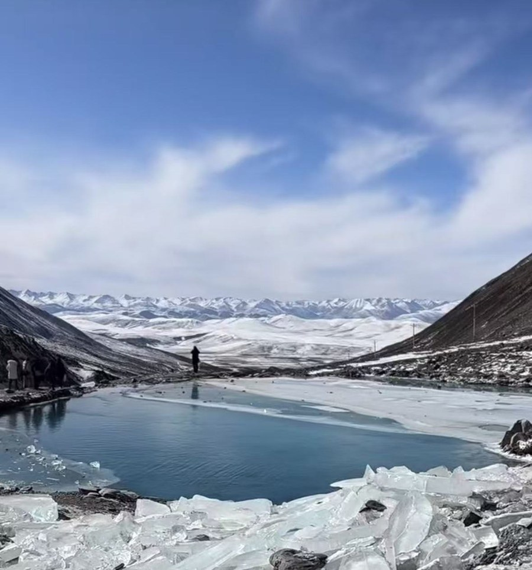
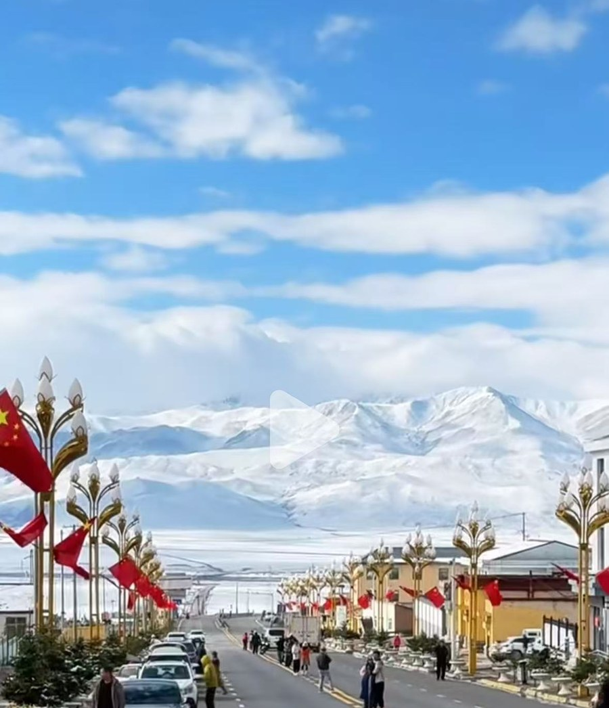
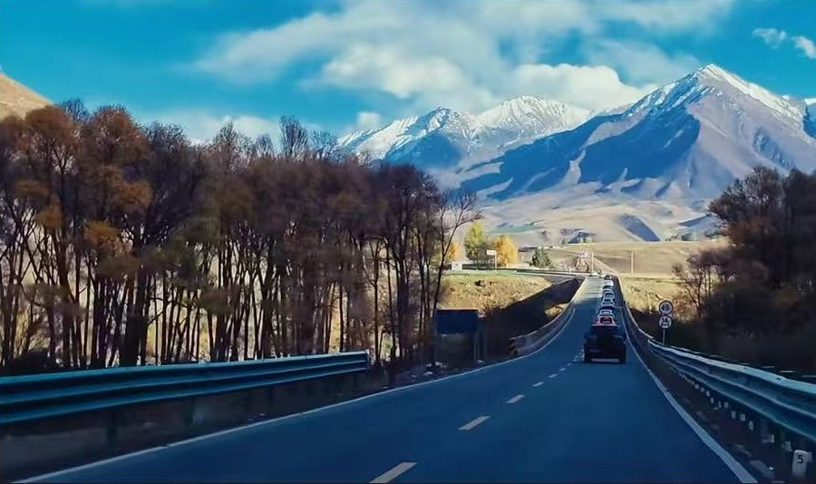
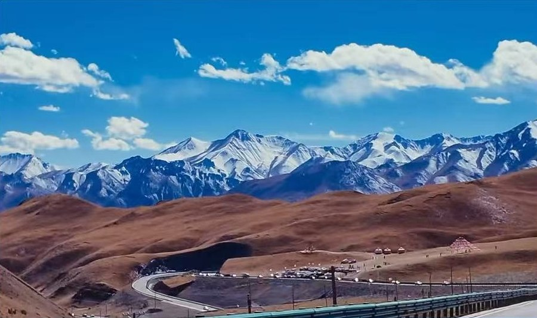
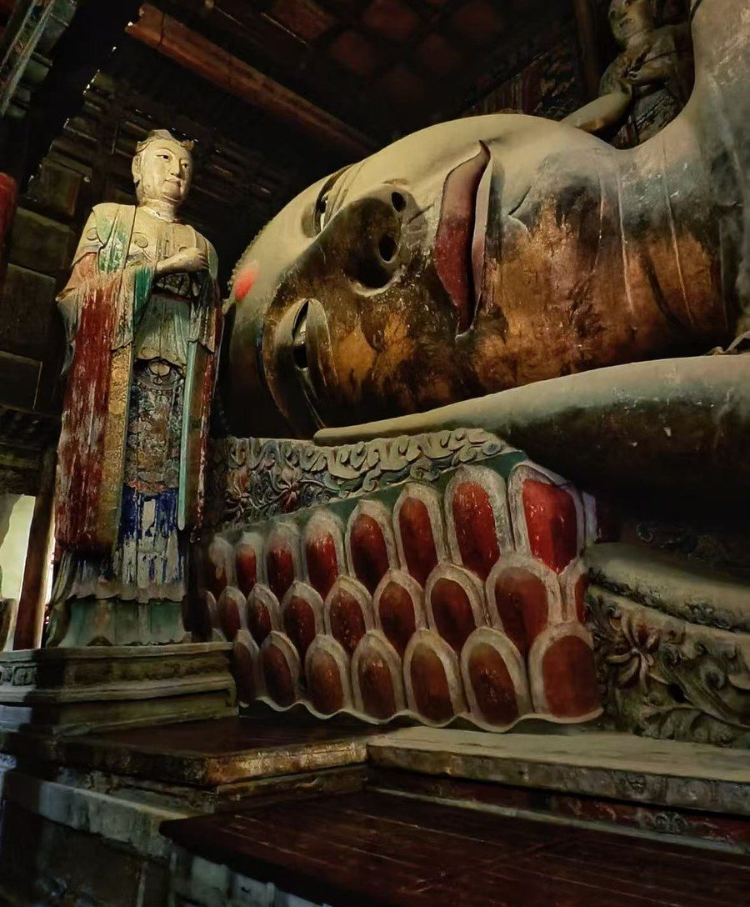
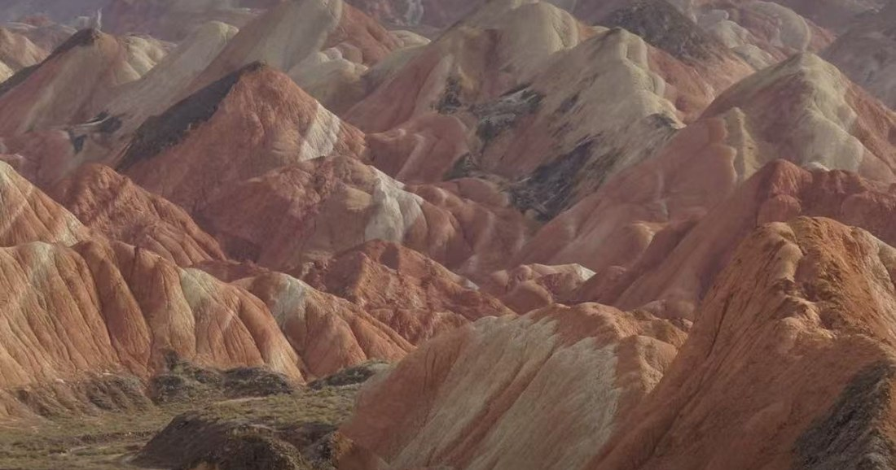
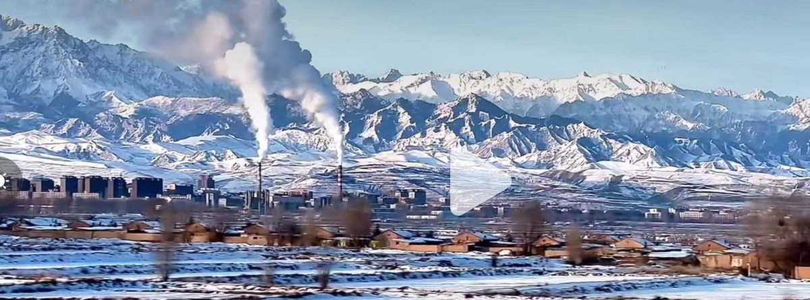

深圳出发，西宁进出。720 公里环线，一次走完青藏高原与河西走廊的两副面孔：翻过 3790 米的达坂山，站到岗什卡雪峰脚下的连心湖，走完祁连山的 9 号公路，最后在七彩丹霞收尾。
十一月的西北，人最少、光最斜、雪线压得最低——这三个「最」，只在冬天成立。夏天来，走的是另一条路。
下面这些数字是腾讯地图按 11 月路况算的驾车距离和耗时，可以拿去跟司机对账。
| 路段 | 距离 | 车程 |
|---|---|---|
| 西宁 → 达坂山 → 青石嘴 → 岗什卡游客中心 | 约 165 km | 约 2 小时 35 分 |
| 岗什卡 → 门源浩门镇 | 55 km | 60 分钟 |
| 门源浩门镇 → 峨堡镇 G0611 张汶高速（浩门收费站 → 峨堡收费站）。原 G227 全线封闭，不可走 | 约 95 km | 约 72 分钟 |
| 峨堡镇 → 祁连县城 | 72.9 km | 77 分钟 |
| 祁连县城 → 肃南县城（9 号公路） 其中：县城 → 郭米村约 25 km / 33 分钟；野牛沟乡在 82 km 处 | 151.3 km | 192 分钟 |
| 肃南县城 → 张掖市区 | 85.6 km | 92 分钟 |
| 峨堡收费站 → 门源浩门（G0611） 9 号公路封路时的备选通道 | 约 95 km | 约 72 分钟 |
| 已不可通行：峨堡 → 扁都口 → 民乐 G227 扁都口至峨堡段全封闭至 2027 年，小客车亦禁行 | — | — |
| 张掖市区 → 七彩丹霞 | 37.6 km | 47 分钟 |
| 张掖市区 → 张掖西站 | 约 12 km | 约 20 分钟 |
| 日期 | 地点 | 日出 | 日落 |
|---|---|---|---|
| 11/7 周六 | 门源 → 祁连 | 07:51 | 18:14 |
| 11/8 周日 | 肃南 | 07:58 | 18:18 |
| 11/8 周日 | 张掖市区 | 07:53 | 18:11 |
| 11/9 周一 | 张掖 / 七彩丹霞 | 07:54 | 18:10–18:13 |
| 场景 | 走法 | 结果 |
|---|---|---|
| Day2 傍晚 峨堡 → 祁连 （S302 峨祁公路） | 若垭口结冰或管制，就地退回门源浩门镇住（18:00 到门源，天还亮）。Day3 从门源补走峨堡 → 祁连，再进 9 号公路 | Day3 多 175 km 9 号公路只剩 3 h |
| Day3 早上 9 号公路 （G213 二尕公路） | 若封路或暗冰严重，原路退回峨堡 → G0611 张汶高速 → 门源站 → 兰新高铁 → 张掖西。全程高速 + 铁路，完全不进山 | 约 13:20 到张掖 大佛寺来得及 |
| 一切正常 | 祁连 → G213 二尕公路 → 肃南 → 张掖 | 16:02 |
9 号公路封了，唯一体面的解法不是硬穿，是退回峨堡上高速、到门源站换高铁。兰新高铁在门源设站，这一段本来就是穿祁连山隧道群过去的——等于把「翻山」换成「穿山」，风景换个看法，人一点不累。
| 时间 | 节点 | 里程 / 车程 |
|---|---|---|
| 09:00 | 祁连县城出发 · S302 往峨堡 和主计划同一时间发车，不提前 | — |
| 10:17 | 峨堡收费站 · 上 G0611 张汶高速 | 72.9 km / 77 min |
| 11:30 | 门源站 · 买最近一班 站就在浩门镇边上，进站 15 分钟够 | 约 95 km / 72 min |
| 约 12:10 | 动车 · 门源 → 张掖西 车次时刻以 12306 当天为准，这段约 1 小时 | 199 km |
| 约 13:20 | 张掖西站 → 酒店 约 12 km / 20 分钟 | — |
| 约 14:00 | 大佛寺 · 这次是正选，不是可选 ¥40 · 17:30 停止入园，时间很宽 | 步行 5 min |
| 18:00 | 甘州市场晚餐 | — |
这条备选比主计划还早到张掖两个多小时（主计划 16:02 到）。代价是黑河大峡谷和祁连山腹地全没了——所以它只在真封路时启用，别因为「反正有备选」就轻视天气。
顺带说清：马蹄寺这次彻底没机会了。它得从民乐方向进山，扁都口不开就绕不进去；就算从张掖出发，单程 65 km、1 小时出头，来回加游览至少 5 小时，这天塞不下。这个点留到下次，不硬凑。
这条路的路况每天都在变，别拿攻略里的结论当现状。下面三个是官方渠道，比任何小红书和聊天记录都准。
| 渠道 | 查什么、怎么问 |
|---|---|
| 12328 青海 / 甘肃公路服务热线 | 直接问人工：G213 二尕公路 K622+700–K671+668（老虎沟至东山隧道段）通不通、S302 峨祁公路有没有管制。报桩号，对方一听就懂，比说「9 号公路」有用 |
| 「张掖公路」公众号 | 每天 8:30 发《每日路况信息》，9 号公路的管制与解除都在这里首发，比新闻快半天 |
| 「肃南公安」「祁连公安」 | 临时封闭通告以公安发布为准，带具体桩号和预计恢复时间，最权威 |
| 时点 | 做什么 |
|---|---|
| 出发前 72 h | 看 11/7–11/9 门源、祁连、肃南三地天气。有中雪以上，就把 Day3 的门源站高铁当成主计划，顺手查 12306 班次 |
| 出发前 24 h | 再查一次路况，并跟司机通电话：确认他知道 G227 门源—峨堡全线封闭、Day2 要走 G0611。这一条最容易出事——有些司机还在按老路走 |
| 每天 07:00 | 当天出发前查一次。Day3 早上这一查最关键：二尕公路和 S302 都不通，就直接启动退回西宁的方案，别进山试 |
机票定死在西宁进、西宁出，中间坐一次动车。动车搁在哪一天，决定了这趟是「两头松」还是「末段赌」。
| 现在这样 西宁进 → 张掖出 | 反过来 张掖进 → 西宁出 | |
|---|---|---|
| 岗什卡 | 11:45 到，距 13:30 停摆渡余 1 小时 45 分 | 12:38 到，距 13:30 停摆渡只余 52 分钟 |
| 最后一天 | 37.6 km 平路 + 高铁 2 小时，到机场余 2 小时 | 395 km 山路 + 翻达坂山，到机场余 65 分钟 |
| 山路遇阻 | Day3 封路走 S302 + G0611 到门源站换高铁，13:20 就到张掖，Day4 照旧 | Day3 的 9 号公路先废，Day4 还要翻达坂山 |
| 翻达坂山 | Day2 上午 10:40，日头正高 | Day4 傍晚 17:00，天黑加暗冰 |
| 取车 | 西宁，省会车多、四驱好找 | 张掖，冬季车源少、价格高一档 |
反着走的唯一真好处是丹霞能看日落（18:10）。但 11 月太阳角度全天都低，正穿 09:17 进园到 12:17，太阳高度只有 20°–35°，斜射光依然在，色彩不会发闷——这个优势冬天比夏天小得多。为它把 395 km 山路换到最后一天，不值。
这条线不是新修的景观公路，是几条古道叠在一起：唐蕃古道、丝绸之路南线、河西走廊。下面按天排，看到什么、背后是什么。
大通河与湟水的分水岭。翻过这道垭口，地理上就从河湟谷地进了河西走廊的地界——一边是黄河水系，一边是内陆河。G227 在这里必须认命地盘上去，这也是为什么九点出发、十点四十才到第一个观景台。
「岗什卡」是藏语，意思是雪山之巅，冷龙岭主峰。当地华热藏族把它当神山，转山的老人在山脚下能遇到。山下那条七彩瀑布冬天会冻成冰瀑，能不能看到蓝冰要看当年的气温——每年不一样，这也是它值得专程跑一趟的原因。

峨堡是丝绸之路南线的关隘，被叫作「青海北大门」。往北三十公里就是扁都口，古称大斗拔谷——河西走廊通往青海的千年孔道，从汉代一直用到现在。
隋大业五年（609），隋炀帝西巡张掖，走的就是大斗拔谷。《隋书》记这一回：「山路隘险，鱼贯而出，风雪晦冥……士卒冻死者太半。」一千四百年后，你们十一月要走的那条 G227 扁都口段，正是沿着这条古道修的，现在封闭施工到 2027 年 6 月。这条路从来就不好走，不是今年才难。
纪录片第 6 集《丝路》整集就在讲这一趟——裴矩怎么绘《西域图记》，隋炀帝怎么从这条路进张掖，怎么在焉支山会见西域二十七国使者。

「祁连」是匈奴语，意思是天——祁连山就是「天山」。元狩二年（前 121）霍去病出陇西、过焉支山、深入祁连山，匈奴人丢了这片山之后唱：「失我祁连山，使我六畜不蕃息；失我焉支山，使我妇女无颜色。」
这歌唱的就是你们今天翻了一整天的这片山。县城北面是牛心山（4667 m），南面是祁连山主脊，空气干净，晚上抬头有银河。纪录片第 2 集《通道》讲的就是这一年——十九岁的霍去病一年三次出击，把河西走廊整个并入汉朝版图。
县城出来先沿八宝河走十公里，八宝河在那儿汇进黑河，公路从此一路贴着黑河往上。再走十几公里，第一个像样的村子就是郭米村——它是黑河大峡谷的门户，过村再往前，河谷就收窄、两岸对峙，才算进了峡谷。
攻略上它为什么火？三个东西叠在同一个画面里：村舍、河湾、背后带雪的山。夏天还多一层，路边成片野花、坡上是深绿的云杉。所以小红书上那些图，多半是七八月拍的。
11 月要按另一个版本看：野花没了，草滩转成褐黄，河水的青色更沉——但好处是雪线压到了村子后面，夏天拍不到的「村在烟火里、雪山就在墙后」那种关系，这时候才有。别拿七月的照片当期待，仍然值得停 15 分钟。
拍法：村口空地停车（别开进村道，冬天路窄还有冰），往下游方向站，把经幡、村舍、河湾、雪峰压进一张。这一段观景港湾多、免费，看到好角度就停。
黑河是中国第二大内陆河，发源祁连山，流过张掖、酒泉，最后注入内蒙古的居延海。《尚书·禹贡》里「导弱水至于合黎，余波入于流沙」——那个「弱水」，一般认为就是今天的黑河。所以「弱水三千，只取一瓢饮」说的水，源头就在这条峡谷里。
峡谷最深四百多米，G213 贴着崖壁走。这一段还有野牛沟和祁连鹿场——野牛沟是祁连山腹地的牧业乡，雪豹、白唇鹿的活动区；鹿场是亚洲最大的半野生鹿驯养基地，路边经常能看到鹿群。


肃南是全国唯一的裕固族自治县。全县裕固族一万多人，却说着三种话：西部裕固语属突厥语族，东部裕固语属蒙古语族，平常还说汉语。族源能追到唐代河西的回鹘，一路迁徙，最后落脚在祁连山北麓。
这比任何遗址都更像「活着的丝绸之路」——你们路过的不是布景，是还有人在这里过日子的地方。
北凉时期开凿，和莫高窟、榆林窟并称河西三大艺术宝窟。三十三天石窟七层二十一窟直接嵌在绝壁上，最窄处要侧身才过得去，阶梯接近 90 度。名字来自传说：天马在此踏下了蹄印。
这里还有一层身份：前凉时大儒郭瑀为避中原战乱，隐居临松薤谷凿窟讲学，弟子三百余人——一般认为就在马蹄寺所在的临松山一带。纪录片第 4 集《根脉》讲的就是这批人：中原打得一塌糊涂的时候，儒学在河西存了下来，后来反过来哺育了隋唐。
这次为什么不去：马蹄寺最顺的走法是 Day3 从肃南一路过来顺路拐进去，可那条线要过扁都口，扁都口现在全封闭施工。绕回张掖再去，单程 65 km、来回加游览至少 5 小时，四天里挤不出来。硬塞进去的结果是岗什卡和 9 号公路各砍一半，不值。留到下次。
始建于西夏崇宗永安元年（1098），是全国唯一留存的西夏佛教寺院。张掖当时是西夏的甘州，这座寺由皇家供养，所以规格极高。殿内那尊卧佛身长 34.5 米，是全国最大的室内泥塑卧佛。
做法很有意思：先用木料搭成十一间的屋架，钉木板做胎，再缠草绳、敷草泥、塑形、贴金，所以叫「木胎中空泥塑」。胎体上留着通风口，腹腔里藏着佛经、铜镜、铜钱，取「心明如镜、肚量如海」的意思。
想先有个背景，可以看纪录片第 5 集《造像》——佛教沿这条走廊东传、造像一点点中国化的过程。大佛寺是这条谱系里最晚的一站，也是最世俗的一站。

十八罗汉里有一尊降龙罗汉，手执绳索，却看不到龙。顺着他的目光往上抬——屋梁上盘着一条五爪金龙。
因为这是西夏皇家寺院，五爪龙是天子，罗汉降不了天子。这个小心思，是当年塑像的人悄悄留给自己的。
卧佛身后的墙上，一幅残长 4.4 米、高 2.9 米的连环画，画的是唐僧师徒西天取经：「取水子母河」「道昧放心猿」「大战红孩儿」「活人参果树」「路阻火焰山」「大圣闹天宫」十几个场景。壁画距地面 1.55 米，正好跟视线平齐。
但这幅画里的猪八戒，跟你看惯的那个完全不是一个人。
壁画里的分工是：猪八戒挑着行李担子，沙僧牵马，孙悟空拄着金箍棒在树丫间打盹。取水子母河那一幕，八戒蹲在河边一手舀水一手回头跟师父说话，唐僧在树下伸手催他，悟空靠着树睡觉。活人参果树那场，八戒抱着树干使劲往上扶，悟空蹲在地上捧土。
在吴承恩笔下又懒又馋的那个呆子，在这里是全队最勤恳的一个。当地有个玩笑说法：因为高老庄就在张掖，八戒在丈人家门口得表现得像样点。
年代上学界有分歧：主流看法是明末清初，因为画法和明刊本《李卓吾先生批评西游记》的插图高度相似；也有学者依据明代永乐十七年（1419）那次大修，把它推到明早期。
530 平方米壁画：除了西游记，还有《山海经》里的刑天舞干戚、猴子戏鹰。中原神话和佛教故事画在同一间殿里，全国不多见。
门口两块砖雕：「祇园演法」「西方圣境」，各由 50 块小方砖拼成一幅完整画面，佛像正面镀金。郑振铎当年看到惊叹不已，说这么偏远的地方竟有这般工艺。
藏经：明正统十年（1445）的官版《大明三藏圣教北藏经》。1930 年代僧人用土坯把藏经殿整个封死，才把这些经卷留到今天。
看的时候：殿内光线很暗、禁止拍照，进去先站两分钟让眼睛适应，再去看西游壁画那面墙。壁画前塑着地藏王菩萨像，别跨过去。
一亿年前这里是个大湖。铁、锰这些矿物一层层沉在湖底，氧化程度不同，就有了红、黄、橙、白、灰的条带。后来祁连山隆起把湖底顶上来，风和水再把它切开——你们看到的是一亿年地层被翻开的一页。
严格讲，这里主体是「彩色丘陵」，不是地质学意义上的「丹霞」（丹霞指陡崖赤壁）。2020 年它成了世界地质公园。四个台里虹霞台最高、看全景最好。

汉武帝元鼎六年（前 111）置张掖郡，名字出自《汉书》——「张国臂掖，以通西域」，张开国家的臂膀，一直伸到西域去。河西四郡武威、张掖、酒泉、敦煌，张掖居中，是当时的粮仓和政治中心，所以有「金张掖」的说法。
隋大业五年（609），隋炀帝西巡到张掖，在焉支山接见西域二十七国使者，有人管这叫「最早的万国博览会」。同一趟行程，他来的时候穿扁都口冻死了大半士卒，回程还是走那条路。
甘州市场是本地人自己吃饭的地方：搓鱼面、牛肉小饭、炒炮仗（一种短面条，形似炮仗）、临泽小枣。
张掖西到西宁这段 297 公里，是兰新高铁最特别的一段：它不进兰州，直接从祁连山肚子里穿过去。出张掖西列车就往南爬，从 1480 米的走廊底，半小时爬到 3108 米的山丹马场站——全世界海拔最高的高铁站，站房做成「山」字形，指的是祁连山和焉支山。
站台下就是山丹军马场，祁连山北麓的大马营草原，329 万亩，汉代起就是官办马场，今天还是世界上最大、最老的马场之一。小红书上管这段叫「雪国列车」，就是从这儿开始的：11 月草已经枯黄，雪线压到了山根，窗外是褐色的草滩加一道白，一小时的差别就在这半小时里。

过了马场，列车一头扎进祁连山隧道群——马场到浩门之间连着 7 座隧道，最长的一条 9490 米、轨面海拔 3607 米，是世界海拔最高的高铁隧道，2014 年 5 月 1 日贯通。钻出来就是门源，浩门河谷，2900 米。
门源到大通这十几分钟，北侧的窗外就是冷龙岭，主峰岗什卡 5254 米——你们 Day2 花一上午爬上去的那座山。那次人在山里只看到眼前一段，这次在谷底，能看到它完整的轮廓，还不用买摆渡车票。随后列车钻进 15.9 公里的大坂山隧道（全线第一长隧），出来一路下坡进西宁盆地。
只有两段时间值得盯窗外：前半小时（张掖西→山丹马场，从走廊爬进草原）和约 15:45 前后（门源河谷，列车这一段朝西开，山在北侧，大概就是右手边）。中间大半时间在隧道里，补觉正好。
央视 2015 年的十集纪录片，每集 50 分钟，豆瓣 9.7。这趟路跟它重合度极高——你们不是去看河西走廊，是走在它的取景地里。行前挑几集看，路上每个点的来历都能对上号。
| 你们会经过 | 看第几集 | 对得上什么 |
|---|---|---|
| 峨堡 · 扁都口 | 第 6 集《丝路》 | 609 年隋炀帝从大斗拔谷穿进张掖，沿途风雪冻毙士卒；裴矩绘《西域图记》 |
| 张掖 | 第 6 集《丝路》 | 那场会见西域二十七国的盟会，就开在张掖 |
| 祁连山 · 祁连县 | 第 2 集《通道》 | 前 121 年十九岁的霍去病一年三击匈奴，打通河西走廊 |
| 马蹄寺（本次不去） | 第 4 集《根脉》 | 大儒郭瑀隐居临松薤谷凿窟讲学，弟子三百——一般认为就在今天马蹄寺所在的临松山一带 |
| 大佛寺 | 第 5 集《造像》 | 昙无谶、鸠摩罗什、昙曜开启的造像中国化，大佛寺是这条谱系最晚的一站 |
| 肃南 · 裕固族 | 第 8 集《会盟》 | 关联较弱：会盟讲的是蒙藏，裕固族源是回鹘，没有直接对应。但对看能懂河西为什么一直是个多民族混居的走廊 |
这条线上的名字一层压一层：匈奴语、汉语、藏语、蒙古语叠在同一条谷里。张掖、武威、酒泉、敦煌这四个是汉武帝起的，用了两千一百多年——中间它们也轮流被叫过甘州、凉州、肃州、沙州，但本名一直没丢，这种连续性在全国都少见。
| 地名 | 什么意思 | 谁起的 / 什么来历 |
|---|---|---|
| 张掖 | 张国臂掖，以通西域 | 汉武帝元鼎六年（前 111）。「张开国家的手臂，一直伸到西域去」——不是夸富庶，是一个军事动作 |
| 武威 | 武功军威 | 前 121 年霍去病打完匈奴，用军威命名。跟张掖同年设郡 |
| 酒泉 | 城下有泉，其水若酒 | 应劭注《汉书》的说法。民间版本更有名：霍去病把御赐的酒倒进泉里，跟士卒一起喝 |
| 敦煌 | 敦，大也；煌，盛也 | 河西四郡最西端。名字起得最大，位置也最远 |
| 祁连 | 天 | 匈奴语。《汉书》：「匈奴呼天为祁连」。祁连山＝天山，和新疆的天山是同一个意思 |
| 焉支 | 阏氏（单于的正妻） | 匈奴语。传说山上产红蓝花、可制胭脂，所以又叫胭脂山——传说，别当史实 |
| 山丹 | 删丹 | 焉支山又名删丹山，北魏置县时用山名；后来写讹成「山丹」 |
| 甘州 | — | 西魏时张掖改称甘州。西夏在此设甘肃军司——「甘肃」的「甘」就是张掖，「肃」是酒泉。省名是这两个州拼出来的 |
| 西宁 | 西陲安宁 | 北宋崇宁三年（1104）宋军收复此地，改鄯州为西宁州。之前它叫过西平、鄯州、青唐城 |
| 门源 | 浩亹之源 | 浩门河古称浩亹水，旧县名写作「亹源」，1959 年简化成门源 |
| 大通 | 大通河 | 河名做地名。大通河和浩门河是同一条河，上下游两个叫法 |
| 达坂 / 大坂 | 山口 | 蒙古语。青海写达坂山、甘肃写大坂山，指的是同一道梁，G227 从中间翻过去 |
| 峨堡 | 敖包 | 蒙古语「obo」，石堆祭坛。古称察汗峨博，意思是白色的敖包——是敖包，不是城堡的堡 |
| 肃南 | 肃州之南 | 「肃」来自酒泉（肃州），因位于肃州以南得名。1954 年设裕固族自治县 |
| 扁都口 | 大斗拔谷 | 古名。《隋书》里写的就是这三个字，隋炀帝是从这条谷走进张掖的 |
你说得对，张掖的故事密度确实比敦煌高。原因很简单：敦煌是门户，张掖是指挥部。门户负责迎来送往、留下壁画和经卷；指挥部负责驻军、屯田、谈判、平叛、割据——权力斗争比信仰热闹得多，故事自然也多。
河西四郡一字排开：武威、张掖、酒泉、敦煌。张掖居中，脚下是黑河冲出来的最大一片绿洲，水足、地肥、产粮多。古代在没有铁路的年代，能产粮的地方就是中心，所以有「金张掖、银武威」的说法，不是文人的夸张，是粮仓排名。
元狩二年，十九岁的霍去病两次出陇西，过焉支山千余里，把匈奴从这条走廊上打出去。匈奴人唱：「失我焉支山，使我妇女无颜色；失我祁连山，使我六畜不蕃息。」——这首歌你们 Day2 走的那片山就是原唱现场。
地打下来，第二年才轮得到起名字。武威、酒泉在前 121 年设，张掖、敦煌在前 111 年分置。先有刀，后有名字，最后才有丝路——顺序别搞反。
大业五年，隋炀帝从长安出发，穿祁连山、走大斗拔谷进张掖，在焉支山下会见西域二十七国使者。使团里带着裴矩编的《西域图记》——一本把西域各国的山川、道路、物产、王公相貌全画下来的情报手册。
《隋书》记他进谷那一段：「山路隘险，鱼贯而出，风雪晦冥……士卒冻死者太半。」一千四百年后你们走的那条谷，就是这条。
这趟来回走了大半年，是中国历史上皇帝到过最西的地方之一。后来的皇帝再没有第二个走到这里。
1098 年西夏在甘州建大佛寺，因为这里是西夏的陪都级重镇；元代设甘肃行省，治所就在甘州；明代划九边，甘肃镇的总兵也驻甘州。从西夏到明，五百多年里这一带的政治军事中心一直在张掖，不在兰州——兰州上位是清朝以后的事，因为它是通往新疆和青海的交通咽喉。
所以张掖城里留下的东西，气质跟敦煌完全不一样：敦煌是洞窟和经卷，张掖是城、是寺、是衙门、是粮仓。大佛寺那个 34.5 米的卧佛和那面西游记壁画，就是这种「皇家出钱、按最高规格办」的产物。
西宁这个名字出现得很晚。汉代这里叫西平，唐代叫鄯州，吐蕃占了两百多年，唃厮啰政权把都城建在这，叫青唐城——那是西宁历史上最风光的一段，丝绸之路南线和唐蕃古道在这里交汇，胡商云集。
1104 年宋军打回来，改名「西宁州」，取「西陲安宁」。这个名字本身就是一句军事口号，跟张掖的「张国臂掖」是一个套路的命名法。所以西宁城里的古迹不多，它不是靠文物立身的城市，是靠位置——青藏高原的东大门，谁控制这里谁就掐住进出西藏的咽喉。
四天里你们会看到五种完全不同的地貌：雪山、草原、峡谷、平原、彩色丘陵。看着不相干，其实是同一个动作的连锁反应——印度板块撞上来，祁连山被顶起来，走廊被压下去。
印度板块撞上欧亚板块，应力传到两千公里外的这里，祁连山在新生代快速抬升，成了青藏高原的东北边缘。它今天还在长——2022 年 1 月门源 6.9 级地震、1927 年古浪 8 级地震，都是这座山还在动的证据。你们 Day2 翻的达坂山、Day3 走的 9 号公路，走的都是这种「还在长」的山。
祁连山北麓是一条大断裂，山这边往上升，断裂另一侧往下掉，形成一条一千多公里长、几十公里宽的沉降带。北边还有一排矮山（龙首山、合黎山、马鬃山）挡着，于是南北两山夹一条平地——这就是河西走廊。走廊不是「一条路」，是一个地质构造，路只是后来修在它上面的。
所以 Day2 那天你们做的事在地质上很夸张：一天之内从 2200 米的河湟谷地爬到 3790 米的垭口，再落回 2800 米的祁连县城，跨了三个高度带。
黑河发源祁连山，一路向北切穿山脉，切出四百多米深的峡谷——就是你们 Day3 走的那条 G213。山一直在长，河一直在切，谁快谁说了算：山长得快，河就切得深；河切得快，山就被削低。祁连山北坡这些峡谷，是这场拉锯战正在进行的现场。
黑河最后的归宿是内蒙古的居延海，它不流向任何海洋，所以叫内陆河，也是中国第二大内陆河。河西走廊所有的绿洲、所有的城，都靠这种不出口的河养着。
祁连山有约两千条现代冰川。夏天冰雪融化补给河流，冬天重新积累——等于一个国家级的储水池，河西走廊的农业全靠它调峰。11 月冰川不化，河最瘦，这也是为什么这个季节的河谷看着有点「干」。
你们在岗什卡看到的那条七彩瀑布，就是冰川融水在岩壁上冻成的冰瀑。它每年样子都不一样，取决于当年夏天气温有多高、冬天来得有多早——同一个景点，没有两年的照片是一样的。
一亿年前张掖是个大湖。铁、锰这些矿物一层层沉在湖底，氧化程度不同，颜色就不同；后来祁连山隆起把湖底顶起来、挤斜，风和水再把它竖着切开——你们看到的是被翻开的一页地层。所以那些色带是斜的，斜角就是当年被挤压的角度。
严格讲这里主体是「彩色丘陵」，不是地质学意义上的丹霞（丹霞指陡崖赤壁，标准地在广东丹霞山）。2020 年它成了世界地质公园，牌子挂的是「张掖丹霞」，名字和学术定义不完全是一回事。
高原上白天气温升到零上、夜里掉到零下十几度，土里的水反复冻了化、化了冻。这个过程会把地表拱出一个个小鼓包（冻胀丘），也会让路面白天返浆、夜里结一层薄冰。这就是为什么司机早上要慢、为什么你们 9 点出发反而更安全——太早出发，路面正好是最滑的时候。
这条线的吃可以一句话概括：西宁吃羊，祁连吃草原，张掖吃面。三家各有各的招牌，别在景区门口随便解决——景区门口的馆子，一年只做四个月生意，不用回头客。
青海的羊多是藏系羊，在冷水的草场上放养，膻味比内地的羊轻很多。只用清水煮，出锅撒盐，蘸椒盐或蒜泥。本地人吃手抓讲究「肋条」「羊脖」两个部位，肋条肥瘦相间，羊脖最嫩。点之前先问价，按斤称重。
酿皮是洗面洗出来的面筋加皮，浇辣油、蒜水、醋，凉的，五块八块一份；甜醅是莜麦或青稞发酵，微酸带一点酒味，冰镇着喝；尕面片是拇指盖大的面片下羊肉汤，一进门就能闻到味。这三样是西宁人自己天天吃的，不是给游客准备的。
羊肠面要单独说一句：一碗面配一段灌了面糊的羊肠，是本地人的早饭。第一次吃建议先要半份，不是所有人都能接受。
莫家街是给游客的，热闹、方便、不便宜，Day1 晚上十点到那儿正好；想吃本地口味就去下南关街，一条街全是清真馆子，手抓、面食、烤肉都有。兴海路一带的手抓店也集中。
礼节一条：清真餐厅不要带外面的非清真食物进去，也不要在店里喝酒。这条在西宁、祁连、张掖都适用，别当成小事。
祁连的黄蘑菇长在海拔三千米的草原上，跟松茸一样靠菌丝和草根共生。11 月没有鲜的，馆子里写「黄蘑菇炖鸡」多半是干货泡发的——点之前问一句「是鲜的还是泡的」，问清楚了再决定要不要点，价钱差得远。
牦牛奶做的酸奶表面结一层黄皮，撒白糖吃，酸得很直接；炕锅是青海的做法：羊肉、土豆、洋葱在铁锅里干煸，最后拌面片。海拔 2800 米，晚上别吃太饱，吃撑了睡觉容易头疼——这是高原上的常识，不是矫情。
搓鱼面是手掌搓出来的两头尖的面鱼，拌卤或者炒；牛肉小饭是把面切成米粒大的丁下牛肉汤——不是米饭，外地人十个有八个点错；炒炮仗是短面条形似炮仗，爆炒，油大、下饭。三样都是本地人的日常，甘州市场里随便一家都不差。
鸡肉垫卷子是河西的席面菜：整鸡炖汤，汤上铺一层死面卷子蒸熟，卷子吸饱鸡汤；羊肉粉皮面筋是张掖小吃，酸辣口，凉吃热吃都行。前者适合八个人点一份分，后者适合一个人端着碗在街边吃。
另外两样带走：临泽小枣（张掖临泽产，肉厚核小）和山丹羊肉（甘肃有名的羊肉产区，跟青海的羊不是一个路子）。
Day2 从 9 点开到 18 点 23，全程没有正经吃午饭的时间——这是行程里唯一硬扛的一天。Day1 晚上在莫家街买好：馍或青稞饼、牦牛肉干、巧克力、坚果，再加两个保温杯装热水（8 个人至少两只大壶）。
高原上吃饭的规矩是少量多次：空腹容易高反，吃撑了也容易高反。车上备垃圾袋，牧区路段没有垃圾桶。
团里没人有冰雪驾驶经验，「我学一下、慢慢开」听起来是解法，实际不是。先看气温，再看三条跟驾驶技术无关的硬约束，最后算一遍账。
| 地点 | 白天 | 夜间 |
|---|---|---|
| 西宁 · 2200 m | 13–15 ℃ | −1 ~ −3 ℃ |
| 门源 · 2900 m | 10–13 ℃ | −1 ~ −5 ℃ |
| 祁连县城 · 2800 m | 8–15 ℃ | −4 ~ −8 ℃ |
这是 10 月底实测的预报。到 11/6 出发还要再降 3–5 ℃，夜里 −6 ~ −12 ℃。白天大部分路面是干的或湿的，不是全程冰面——但背阴弯道、桥面、隧道口、涵洞顶这四处，白天也结着冰。所以真正的问题不是「路滑不滑」，是「有 20–30% 的路段是暗冰，而你不知道是哪一段」。
一、暗冰上失去附着是瞬间的，跟速度关系不大。桥面上你开到 20 也一样滑。能不能提前半秒松油门、不打方向、不踩刹车，靠的是「这条路冬天长什么样」的肌肉记忆——团里没人有。
二、更现实的风险是被追尾，不是你自己滑出去。G227、G213 上本地车按 60–80 跑，你按 30 开在盲弯里，被追尾的概率比你自己失控高得多。慢，在这个环境里是另一种危险。
三、高原会削判断力。3790 m 上反应慢 0.3 秒，60 km/h 就是多冲 5 米。这不是意志问题，是生理问题，练不出来。
座位和驾照。C1 只能开 ≤9 座。9 座车坐 8 个人，行李舱只剩 3–4 个箱位，你们 8 件托运行李根本装不下。要 12 座就得 B1 以上——等于雇司机。自驾唯一的解是开两辆车，也就是两个司机同时在 3790 m 上处理暗冰。
异地还车。西宁取、张掖还，冬季异地还车费 800–2000 元，不少公司在青海冬季干脆不支持异地还。
保险与责任。租车的车上人员险普遍 1–5 万/座；包车有营运资质和承运人责任险。8 个人一辆车，出事是公司团建的责任问题，不是私人自驾。
| 方案 | 明细 | 8 人合计 |
|---|---|---|
| 包车 9 座 2.5 天，含油费过路 | 8 人 8 件行李装不下，实际要升 12 座，价格高一档 | 约 ¥2,500 起 |
| 自驾两辆四驱 SUV | 车租 400–600/天 × 2 辆 × 3 天 + 油费 700 + 异地还车 800–2,000 + 防滑链拖车绳 300 | ¥4,100–6,700 |
结论很反直觉：自己开更贵，而且多出两个新手司机和一条公司担责的风险。包车 8 个人摊下来每人 300–500 元。
只自驾 Day4：张掖市区 → 七彩丹霞 → 张掖西站。37.6 km，海拔 1480–1800，全程一级公路，没有山路。山路那三天照旧包车——Day4 恰好是全程最不需要司机、也唯一在平原上的一天。
至于 Day2、Day3 自己开，不建议，但门槛摆在这里，你们自己判断：两辆四驱 + 两套防滑链 + 行前在张掖找空地练 2 小时冰面刹车 + 绝不走夜路 + 出发前 3 天看预报（有降雪就直接放弃）。少一条都不成立。
| 项目 | 金额 |
|---|---|
| 机票（深圳往返西宁，¥1200 起 × 8） | 约 ¥9,600 |
| 包车 2.5 天（含油费过路） 按 9 座估；8 人 8 件托运行李建议改 12 座，车费会高一档，需另问 | 约 ¥2,500 |
| 住宿 3 晚（西宁 / 祁连 / 张掖，4 间） | 约 ¥3,300 |
| 门票（岗什卡摆渡车 25 + 丹霞 108 + 大佛寺 40）× 8 大佛寺为可选，不去省 ¥320 | 约 ¥1,384 |
| 张掖 → 西宁动车（¥91.5 × 8） | 约 ¥732 |
| 餐饮 4 天 | 约 ¥3,800 |
| 机动 / 保险 / 零食 | 约 ¥600 |
| 合计 | 约 ¥21,900 |
| 人均 | 约 ¥2,740 |
| 只在这两种情况下发生 | 金额 |
|---|---|
| 封路改走高铁（门源 → 张掖西 × 8） 9 号公路封路时启用，动车票约 ¥60–90/人 | 约 +¥600 |
| 两条山路同时断、退回西宁住一晚（4 间） 9 号公路与 S302 峨祁公路同时管制时才发生 | 约 +¥600 |
| 类别 | 清单 |
|---|---|
| 上身 | 速干打底 + 抓绒 + 厚羽绒 / 冲锋衣（垭口 3700 m 以上，风大体感低 8℃） |
| 下身 | 加绒裤 + 防风外层。不要穿牛仔裤，湿了不干 |
| 脚 | 防滑徒步鞋（连心湖到七彩瀑布是碎石栈道，有霜；丹霞栈道也滑） |
| 配件 | 帽子、手套、围巾、墨镜、高倍防晒、唇膏 |
| 药品 | 晕车药（9 号公路弯多）、感冒药、小瓶氧气（可选） |
| 电子 | 充电宝（低温掉电快）、车充、离线地图、手电 |
| 食物 | 保温杯（灌满热水）、面包 / 巧克力 / 坚果 / 卤味。Day2 山上和 Day3 车上各一顿饭都要自带——岗什卡山上没有补给，9 号公路 151 km 没有饭馆 |
| 风险 | 具体情况 |
|---|---|
| 暗冰 | 最大的风险，不是冷。二尕公路与达坂山背阴路段白天化、夜里冻，看着是湿路面，其实是一层黑冰。Day2 傍晚峨堡 → 祁连（S302 峨祁公路）是全程唯一一段擦黑的行车，这一段的冰最要命。白天翻的景阳岭垭口 3767 m（门源—峨堡之间）是另一个老堵点：一下雪就打滑堵车，央视和人民网都报过。刹车提前 3 倍距离，下坡用低挡，不空挡滑行 |
| 封路 | 达坂山、G213 二尕公路都可能临时管制。祁连回张掖只剩两条路：G213 二尕公路，或者 S302 峨堡 + G0611 到门源站坐高铁。两条都不通就只能退回西宁——出发前一晚和当天早上各查一次，按「如遇封路」那节决策 |
| 天黑得早 | 19:00 前基本全黑。所有行程按「17:30 前离开山路」倒排，绝不赶夜路 |
| 高反 | 西宁 2200 m、达坂山 3790 m、连心湖 3700 m、祁连 2800 m。主计划不再上 4000 m：白天最高 3700 m 只待 1 小时 50 分，夜里睡 2800 m，压力大幅下降。垭口停留控制在 15 分钟内，不跑不跳，不洗头不喝酒，出发前一周开始吃红景天。若临时决定上 4123 观峰台，按 4000 m 以上准备——往返 4.5 km，走 10 分钟歇 2 分钟 |
| 景区淡季时间 | 岗什卡 13:30 停止摆渡车上山、18:00 停运；丹霞 08:00 开园；大佛寺 17:30 停止入园。这几条任一变化，当天时间轴都要重算 |
| # | 事项 |
|---|---|
| 1 | 出机票：11/6 ZH9235 深圳 16:00 → 西宁 19:30；11/9 ZH9236 西宁 20:15 → 深圳 23:30 |
| 2 | 订动车：11/9 张掖西 14:42 D2674 → 西宁 16:44，8 张。不要买 16:25 那班 |
| 3 | 定包车：2.5 天（Day2 / Day3 全天、Day4 半天），确认四驱 + 雪地胎 + 常年跑这条线的本地司机。 车型这一条最容易漏：8 人加 8 件托运行李，9 座车的后备箱基本装不下。要么订 12 座（人少一排放行李），要么确认车顶行李架，要么全队压到 20 寸箱 + 背包。别到机场才发现塞不进去。 合同写明三件事：Day2 约 395 km、9:00–18:30（接近日均 400 km 上限）；Day3 约 237 km；因天气或交通管制改线（含改走 S302 + G0611、或送站乘高铁）不加价——这条必须写进去，否则临时改线容易被加钱。还有一条要口头问实：司机是否跑过祁连—肃南的二尕公路、有没有冬季山区驾驶经验。答不上来就换一家。 |
| 4 | 订住宿：西宁 1 晚（11/6）、祁连 1 晚（11/7）、张掖 1 晚（11/8），4 间双床，都选带暖气。 祁连（海拔 2800 m，供氧酒店比门源多）：祁连宾馆（四星，八宝西路 103 号，0970-7675666，¥345，雪山房带地暖+弥散氧气）、鼎瑞假日（四星，八宝西路 41 号，0970-8688881，¥239，房内制氧机）、吉缘饭店（四星，广场西路 8 号，0970-8685678，¥348）；预算紧选祁铭大厦（三星，人民路南 29 号，0970-5942666，¥127）。 张掖那家订在民主西街 / 大佛寺巷一带——Day3 傍晚 16:35 步行 5 分钟去大佛寺，全靠这个位置；改走高铁那天 13:20 从张掖西站回酒店，同样靠它 |
| 5 | 线上买票：岗什卡摆渡车 ¥25、七彩丹霞 ¥108，各 8 张，现场只刷身份证。大佛寺 ¥40 是可选项，当天现场买——去不去取决于 Day3 到张掖的时间，不用提前订 |
| 6 | 买干粮 + 保险：11/6 晚在西宁超市买好 Day2 山上、Day3 车上的两顿（面包、巧克力、坚果、卤味）；保险买含高原 / 自驾意外的，8 人一起 |
| 7 | 发群公告：每天 09:00 发车（不是 8 点）；Day2 不吃正餐午饭、不去 4123 观峰台，18:40 前必须到祁连；Day3 08:30 加满油、带上午饭，9 号公路慢慢走；Day3 傍晚 16:35 大佛寺自愿参加，17:30 停止入园；若 Day3 早上 9 号公路封了，改走峨堡 → G0611 → 门源站坐高铁，13:20 到张掖，大佛寺照去；每段设硬截止时间，到点就走 |